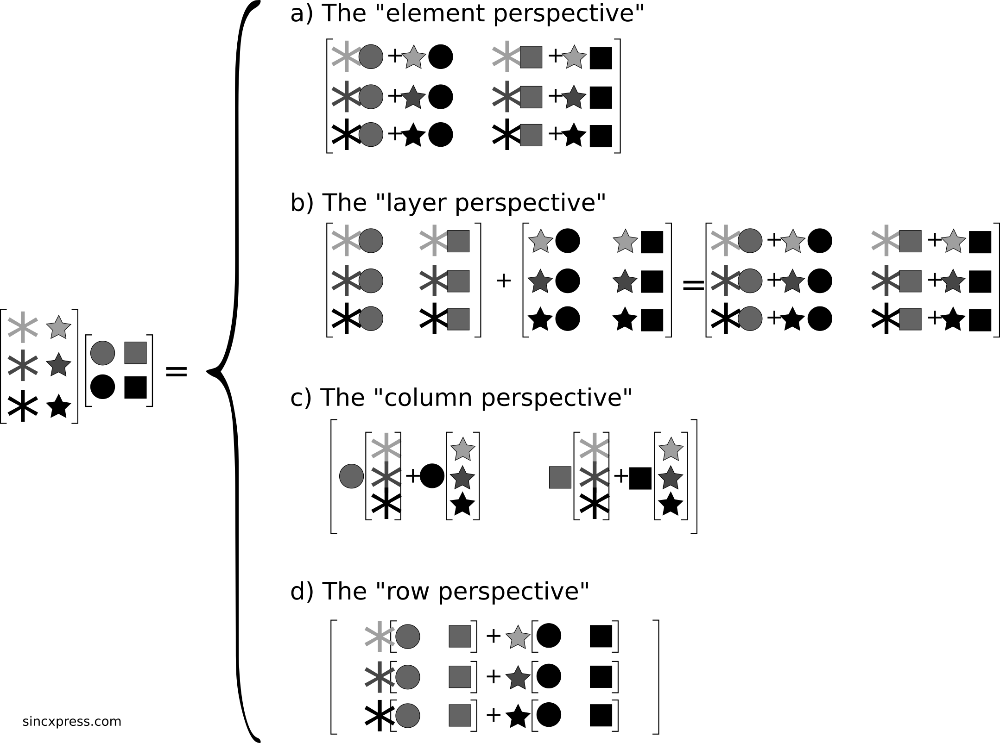

Linear Algebra, Cohen Pt. 1
Vector Multiplication Methods
The Dot Product
The dot product is a single number that provides information about the relationship between two vectors. Because it is a single number, it is also sometimes called the scalar product. It is the computational building block upon which many algorithms are built, including correlation, convolution, and the Fourier transform.
Possible representations/notation include:
$$a^Tb = a \cdot b = \langle a, b \rangle = \sum_{i=i}^n a_i b_i$$
Example:
$$ \begin{bmatrix} 1 \\ 0 \\ 2 \\ \end{bmatrix} \cdot \begin{bmatrix} 2 \\ 8 \\ 6 \\ \end{bmatrix} $$
$$v^Tw = 1 \times 2 + 0 \times 8 + 2 \times 6$$
$$= 2 + 0 + 12 = 14$$
The dot product is distributive:
$$a(b+c) = ab + bc$$
$$a^T(b+c) = a^Tb + a^Tc$$
$$\sum_{i=1}^n a_i b_i + \sum_{i=1}^n a_i c_i = \sum_{i=1}^n a_i (b_i + c_i)$$
The dot product is not associative (though matrix multiplication is).
$$a(b \cdot c) = (a \cdot b)c$$
$$a^T(b^Tc) \neq (a^Tb)^Tc$$
The dot product is commutative:
$$a^Tb = b^Ta$$
Why is transpose used in the notation? Given the rules of matrix multiplication, we cannot multiply two vectors when they are both viewed as column matrices. To rectify this problem, we can take the transpose of the first vector, turning it into a $1 \times 1$ matrix, i.e., a scalar.
Geometric Interpretation
$$\alpha = |a||b|cos(\theta_{ab})$$
The dot product between two vectors is the cosine of the angle between those two vectors scaled by the product of the lengths of those vectors.
How to compute the angle between 2 vectors:
$$\alpha = |a||b|cos(\theta_{ab})$$
$$\frac{\alpha}{|a||b|} = cos(\theta_{ab})$$
$$\theta_{ab} = arccos \left( \frac{\alpha}{|a||b|} \right)$$
Vector length is given as:
$$||v|| = \sqrt{v^Tv}$$
For a two-element vector (using the Pythagorean theorem):
$$||v||^2 = (v_1)^2 + (v_2)^2$$
Unit-Length Vectors
To set a unit-length vector, use the following formula:
$$||\mu v|| = \frac{1}{||v||}||v|| = 1$$
$\mu$ is the reciprocal of the magnitude of $v$
The Outer Product of Two Vectors
The dot product performs $v^Tw$, an $n \times 1$ by $n \times 1$ operation in terms of matrix sizes. The outer product performs $vw^t$, an $n \times 1$ by $m \times 1$ operation producing an $n \times m$ size matrix.
$$ \begin{bmatrix} 1 \\ 0 \\ 2 \\ 5 \\ \end{bmatrix} \begin{bmatrix} a & b & c & d\\ \end{bmatrix} = \begin{bmatrix} 1a & 1b & 1c & 1d\\ 0a & 0b & 0c & 0d\\ 2a & 2b & 2c & 2d\\ 5a & 5b & 5c & 5d\\ \end{bmatrix} $$
Vector Cross Product
The vector cross product is defined only for two 3D vectors; the result is another 3D vector.
$$ \begin{bmatrix} 1 \\ 2 \\ 3 \\ \end{bmatrix} \begin{bmatrix} a \\ b \\ c \\ \end{bmatrix} = \begin{bmatrix} 2c - 3b \\ 3a - 1c \\ 1b - 2a \\ \end{bmatrix} $$
Geometrically, any two distinct vectors can form a plane. The cross product gives a vector that is orthogonal to both (z-axis).
Hermetian Transpose, a.k.a Conjugate Transpose
The Hermetian transpose applies when working with complex numbers. The algebraic perspective of the complex conjugate is that you flip the sign of the imaginary part of the complex number without changing the real part.
$$a + bi \rightarrow a - bi$$
$$a - bi \rightarrow a + bi$$
Geometrically, this flips the complex number across the real axis. The Hermetian/conjugate transpose is indicated with an H or asterisk where the T would normally be ($A^H$).
Example:
$$ \begin{bmatrix} 1 3i \\ -2i \\ 4 \\ 5 \\ \end{bmatrix} ^H = \begin{bmatrix} 1-3i & 2i & 4 & -5\\ \end{bmatrix} $$
Why not use the regular transpose? The hypotenuse of a complex number [3 4i] cannot be calculated correctly using the regular transpose, whereas the Hermetian transpose yields that quantity squared.
Regular Transpose:
$$z^Tz = (3 ~4i)(3 ~4i)$$
$$= 9 +12i + 12i + 16i^2$$
$$= 9 + 12i + 12i - 16$$
$$= -7 + 24i$$
Hermetian Transpose:
$$z^Hz = (3~ 4i)(3 - ~4i)$$
$$= 9 + 12i -12i - 16i^2$$
$$= 9 + 16$$
$$= 25$$
Subspaces
A subspace is defined as the set of all vectors that can be created by taking linear combinations of some vector, or a set of vectors. Linear combination means multiplication by a scalar, and that scalar can be any real number. For $v$, any vector that can be expressed as $\lambda v$ is in the same subspace as vector $v$. You can also create a subspace from two vectors by considering all possible linear combinations.
$$\lambda v + \beta w$$
Example:
$$ v = \begin{bmatrix} 2 \\ 3 \\ \end{bmatrix} w = \begin{bmatrix} 0 \\ 4 \\ \end{bmatrix} 6v - 4w = \begin{bmatrix} 12 \\ 2 \\ \end{bmatrix} $$
Geometrically, two vectors create a subspace, a 2D plane that passes through the origin, in which both vectors lie (except for when they point in the same direction).
Subspaces vs. Subsets
A subset is a set of points that satisfies some conditions. It can have boundaries, but does not need to be closed, and does not need to include the origin. A subset example is: all points on the XY plane such that $x \gt 0$, $y \gt 0$, or all points on the XY plane such that $x^2 + y^2 = 1$.
Tips to determine whether a subset or a subspace:
- Subspaces include the origin
- Subspaces can be written in terms of vectors and scalars of form $av + \beta w$
Span
A subspace is a region of space that you can reach by any linear combination of the given vectors. The span of a set of vectors is all possible weighted combinations of all the vectors in that set.
$$span({v_1, \ldots, v_n}) = a_1 v_1 + \ldots + a_n v_n$$
It stretches to infinity because the scalars can be arbitrarily large or small. A frequent question in linear algebra is whether one vector is in the span of another vector or set of vectors.
Example: is $v$ or $w$ in the span of $s$?
$$ v = \begin{bmatrix} 1 \\ 2 \\ 0 \\ \end{bmatrix} w = \begin{bmatrix} 3 \\ 2 \\ 1 \\ \end{bmatrix} s = \begin{bmatrix} 1 \\ 1 \\ 0 \\ \end{bmatrix} , \begin{bmatrix} 1 \\ 7 \\ 0 \\ \end{bmatrix} $$
Answer: Yes, $v \in span(S)$ because
$$ \begin{bmatrix} 1 \\ 2 \\ 0 \\ \end{bmatrix} = \frac{5}{6} \begin{bmatrix} 1 \\ 1 \\ 0 \\ \end{bmatrix} \frac{1}{6} \begin{bmatrix} 1 \\ 7 \\ 0 \\ \end{bmatrix} $$
Linear Dependence
The formal definition of linear dependence is related to determining whether a weighted combination of the vectors in a set can form the $0$ vector. A set of $M$ vectors is independent if each vector points in a geometric dimension not reachable using other vectors in the set.
$$0 = \lambda_1 v_1 + \lambda_2 v_2 + ... + \lambda_n v_n, ~\lambda \in \mathbb{R}$$
which means that
$$\lambda_1 v_1 = \lambda_2 v_2 + \ldots + \lambda_n v_n$$
$$v_1 = \frac{\lambda_2}{\lambda_1} v_2 + \ldots + \frac{\lambda_n}{\lambda_1} v_n, ~\lambda \neq 0, v_1 = 0$$
Geometrically, dependent vectors in $\mathbb{R}^2$ are guaranteed to form a linearly dependent set, because with any two of the three vectors, you can reach any possible point in the $\mathbb{R}^2$ plane. In $\mathbb{R}^3$, it is only dependent if the third vector sits along the plane created by the other two.
Any set of $M \gt N$ vectors in $R^N$ is dependent. Any set of $M \le N$ vectors in $\mathbb{R}^N$ could be independent. The matrix rank method can be used to tell whether a set of vectors is dependent or independent.
Basis Vectors
There are two conditions for a set of vectors to be a basis:
- They contain a set of independent vectors
- They span all of the subspace, such as $\mathbb{R}^2$ or $\mathbb{R}^3$
Any point can be obtained by some unique linear combination of the standard basis vectors in that set. Orthogonal bases are easy to compute and work with. Finding an optimal basis set for a dataset is used in dimensionality reduction techniques.
Matrices
Matrix Multiplication
There are multiple perspectives from which to look at matrix multiplication, all of which arrive at the same result:
1. The Element Perspective:
$$ \begin{bmatrix} 0 & 1 \\ 2 & 3 \\ \end{bmatrix} \begin{bmatrix} a & b \\ c & d \\ \end{bmatrix} = \begin{bmatrix} 0a+1c & 0b+1d\\ 2a+3c & 2b+3d \\ \end{bmatrix} $$
2. The Layer Perspective:
$$ \begin{bmatrix} 0a & 0b \\ 2a & 2b\\ \end{bmatrix} + \begin{bmatrix} 1c & 1d \\ 3c & 3d\\ \end{bmatrix} = \begin{bmatrix} 0a+1c & 0b+1d \\ 2a+3c & 2b+3d\\ \end{bmatrix} $$
3. The Column Perspective:
$$ \begin{bmatrix} 0 & 1 \\ 2 & 3 \\ \end{bmatrix} \begin{bmatrix} a & b \\ c & d \\ \end{bmatrix} = a \begin{bmatrix} 0 \\ 2 \\ \end{bmatrix} + c \begin{bmatrix} 1 \\ 3 \\ \end{bmatrix} b \begin{bmatrix} 0 \\ 2 \\ \end{bmatrix} + d \begin{bmatrix} 1 \\ 3 \\ \end{bmatrix} $$
4. The Row Perspective:
$$ \begin{bmatrix} 0 & 1 \\ 2 & 3 \\ \end{bmatrix} \begin{bmatrix} a & b \\ c & d \\ \end{bmatrix} = \begin{bmatrix} 0[a b] + 1[c d] \\ 2[a b] + 3[c d] \\ \end{bmatrix} $$

With a diagonal matrix, if post-multiplying by the diagonal matrix ($AD$), then the columns are weighted by the diagonal elements of $D$. Pre-multiplying by $D$ ($DA$) weights the rows according to the diagonal elements of $D$.
Order of Operations on Matrices
Remember the $(LIVE)^T = E^T V^T I^T L^T$ rule.
Matrix-Vector multiplication always results in a vector:
$$A w = v$$
$$m \times n \cdot n \times 1 = m \times 1$$
$$ \begin{bmatrix} a & b \\ c & d \\ \end{bmatrix} \begin{bmatrix} 2 \\ 3 \\ \end{bmatrix} = \begin{bmatrix} a2 + b3 \\ c2 + d3 \\ \end{bmatrix} $$
$$ \begin{bmatrix} 2 & 3 \\ \end{bmatrix} \begin{bmatrix} a & b \\ c & d \\ \end{bmatrix} = \begin{bmatrix} a2 + c3 \\ b2 + d3 \\ \end{bmatrix} ^T $$
2D Transformation Matrices
Multiplying a vector by a matrix tends to have the effect of rotating (and perhaps scaling) that vector. There is a rotation matrix that performs rotation only (without scaling).
$$ \begin{bmatrix} cos(\theta) & -sin(\theta) \\ sin(\theta) & cos(\theta) \\ \end{bmatrix} $$
When a matrix applies no rotation, the vector is called an eigenvector and the scalar with equal effect as the matrix is called an eigenvalue.
Symmetric Matrices via The Additive Model
For square matrices, the additive method works by first taking any square matrix $A$ and adding to itself its own transpose, before optionally dividing by $2$:
$$S = (A + A^T) / 2$$
$$S = S^T$$
The multiplicative method involves multiplying the matrix by its transpose:
$$A^TA = S$$
$$AA^T = S$$
The output will be square; but this is not required of the input.
Frobenius Dot Product
Ways to Calculate:
Method 1:
- Step 1: element-wise multiplication of two matrices
- Step 2: sum all elements
Method 2:
- Step 1: vectorize both matrices
- Step 2: compute dot product
To vectorize, one concatenates column-wise:
$$ vec \left( \begin{bmatrix} a & c & e \\ b & d & f \\ \end{bmatrix} \right) = \begin{bmatrix} a \\ b \\ c \\ d \\ e \\ f \\ \end{bmatrix} $$
Method 3 - the Transpose-Trace Trick:
$$\langle A, B, \rangle_F = tr(A^TB)$$
The Frobenius dot product of a matrix with itself is called the Frobenius norm, or Euclidean norm, and is the sum of squared elements.
$$norm(A) = \sqrt{\langle A, A \rangle}_F = \sqrt{tr(A^TA)}$$
Norms
The Induced 2-Norm, a.k.a. 2-Norm, P-Norm
$$||A||_p = sup \frac{||Ax||_p}{||x||_p}, x \neq 0$$
The Schatten P-Norm
$$||A|| = \left( \sum_{i=1}^r \sigma_i^p \right)^{1/p}$$
where $\sigma$ is the singular values of the matrix, from singular value decomposition (SVD).
Matrix Rank
The rank of a matrix is a single number that provides insight into the amount of information that is contained in the matrix. It is indicated as $r(A)$ or $rank(A)$.
It is a non-negative integer related to the dimensionality of the information contained in a matrix. The maximum possible rank is the smaller of $m$ or $n$, where $m$ is the number of rows and $n$ the number of columns. The rank of a matrix is the largest number of columns or rows that can form a linearly independent set.
Boundaries for Rank $A$ and $B$:
$$rank(A + B) \le rank(A) + rank(B)$$
For Rank of $AB$:
$$rank(AB) \le min({rank(A), rank(B)})$$
For Rank of $A^TA$ and $AA^T$:
$$rank(A) = rank(A^TA) = rank(A^T) = rank(AA^T)$$
Spaces of a Matrix
Column Space
Column space is the subspace spanned by the columns of a matrix $A$. The notation is $C(A)$. You can think of a matrix as if it comprises column or row vectors.
$$C(A) = {\beta_1 a_1, + \ldots + \beta_n a_n}, \beta \in \mathbb{R} = span({a_1, \ldots, a_n})$$
One of the important questions in linear algebra is whether a certain vector is contained in the column space of a certain matrix.
Example:
$$\text{Is } \begin{bmatrix} -3 \\ 1 \\ 5 \\ \end{bmatrix} \in C \left( \begin{bmatrix} 3 & 0 \\ 5 & 2 \\ 1 & 2 \\ \end{bmatrix} \right) ? $$
Answer: yes, because:
$$ -1 \begin{bmatrix} -3 \\ 5 \\ 1 \\ \end{bmatrix} 3 \begin{bmatrix} 0 \\ 2 \\ 2 \\ \end{bmatrix} = \begin{bmatrix} -3 \\ 1 \\ 5 \\ \end{bmatrix} $$
This could also be written as:
$$ \begin{bmatrix} -3 & 0 \\ 5 & 2 \\ 1 & 2 \\ \end{bmatrix} \begin{bmatrix} -1 \\ 3 \\ \end{bmatrix} = \begin{bmatrix} -3 \\ 1 \\ 5 \\ \end{bmatrix} $$
The zero vector is always in the column space of a given matrix $A$. A vector that is in the column space of a matrix in $\mathbb{R}^3$ sits on the plane interpreted from the matrix. If a vector is in the column space of $A$, the next resulting question is usually: what are the coefficients of each column in the matrix such that the weighted sum of the columns in matrix $A$ give us vector $v$? If not, the next question is usually about how close it is.
Consider the following vector which is not in the column space of the following matrix:
$$ \begin{bmatrix} 1 \\ 7 \\ 3 \\ \end{bmatrix} \begin{bmatrix} 0 & 0 \\ 5 & 2 \\ 1 & 2 \\ \end{bmatrix} $$
How do we make it fit as closely as possible?
In an equation where the vector is in the column space of the matrix, we write something like:
$$ \begin{bmatrix} 3 & 0 \\ 5 & 2 \\ 1 & 2 \\ \end{bmatrix} \begin{bmatrix} -1 \\ 3 \\ \end{bmatrix} = \begin{bmatrix} 3 \\ 1 \\ 5 \\ \end{bmatrix} $$
Putting all terms of the left side, the equation would equal zero, but this is not the case when the vector is outside of the column space of the matrix.
$$ \begin{bmatrix} 0 & 0 \\ 5 & 2 \\ 1 & 2 \\ \end{bmatrix} \begin{bmatrix} w_1 \\ w_2 \\ \end{bmatrix} - \begin{bmatrix} 1 \\ 7 \\ 3 \\ \end{bmatrix} = \begin{bmatrix} v_1 \\ v_2 \\ v_3 \\ \end{bmatrix} $$
We then solve for the elements in the vector on the right, such that the magnitude on the left equals the magnitude on the right.
$$ \left\vert \left\vert \begin{bmatrix} 0 & 0 \\ 5 & 2 \\ 1 & 2 \\ \end{bmatrix} \begin{bmatrix} w_1 \\ w_2 \\ \end{bmatrix} - \begin{bmatrix} 1 \\ 7 \\ 3 \\ \end{bmatrix} \right\vert \right\vert = \left\vert \left\vert \begin{bmatrix} v_1 \\ v_2 \\ v_3 \\ \end{bmatrix} \right\vert \right\vert $$
This is the problem that the least squares algorithm solves.
Row Space
Row space of a matrix A is notated $R(A)$ or $C(A^T)$
It is the same concept as column space, just applied to rows of the matrix, and with a row-vector rather than column-vector.
Null Space
$N(A)$: the set of all vectors such that $Av = 0$ and $v \neq 0$
Example:
$$\text{Is } \begin{bmatrix} 1 \\ -1 \\ \end{bmatrix} \text{ in the null space of } \begin{bmatrix} 1 & 1 \\ 2 & 2 \\ \end{bmatrix} ? $$
Yes, because with matrix multiplication,
$$ \begin{bmatrix} 1 & 1 \\ 2 & 2 \\ \end{bmatrix} \begin{bmatrix} 1 \\ -1 \\ \end{bmatrix} = \begin{bmatrix} 0 \\ 0 \\ \end{bmatrix} $$
Other vectors are also in the null space, such as:
$$ \begin{bmatrix} 2 \\ -2 \\ \end{bmatrix} $$
Any scalar multiplied by $ \begin{bmatrix} 1 \\ -1 \\ \end{bmatrix} $ will produce a vector in the null space of that matrix, and is a vector chosen from an entire subspace.
Linearly independent matrices have an empty null space, whereas dependent matrices' null space holds values. Geometrically, a matrix multiplied by a vector in its null space becomes a point $(0,0)$ at the origin.
Left Null Space
The left null space is the regular null space of the matrix transposed. $N(A^T)$ is the set of all vectors $v$ such that $v^TA = 0^T$ and $v^T \neq 0^T$. It is also written as $A^Tv = 0$. This follows the same concept of null space, but is now a row vector on the left side of the matrix (pre-multiplying).
The 4 subspaces of a matrix - the column space, row space, null space, and left null space - come in two pairs of orthogonal complements. For a vector to be orthogonal to the column space of matrix $A$ means that the dot product of this vector with every column of the matrix is equal to zero.
$$v \bot C(A)$$
$$v^Ta_1 = 0$$
It would mean that the dot product of that vector with any linear combination of columns in matrix A would also be zero. This happens to be the definition of left null space. The left null space is orthogonal to the column space.
$$V^T {\alpha_1 a_1 + \ldots + \alpha_n a_n} = 0$$
One implication of this is that if the column space of the matrix spans all of $\mathbb{R}^M$ then the left null space must be empty, because only the zero vector can be orthogonal to an entire subspace.
Likewise, for a vector to be orthogonal to the row space would mean that the vector is orthogonal to every possible row in matrix A.
$$v \bot R(A)$$
$$v^T a_1^T = 0$$
$$v^T {\alpha_1 a_1^T + \ldots + \alpha_n a_n^T} = 0$$
$$Av = 0$$
Relationships Across Dimensionalities
$$\text{dim}(C(A)) + \text{dim}(N(A^T)) = M \text{(# rows)}$$
$$\text{dim}(C(A^T)) + \text{dim}(N(A)) = \text{N (# columns)}$$
All of $\mathbb{R}^M$ is spanned by the orthogonal complements of the column space of the matrix and the left null space, $N(A^T)$. The dimensionality of the row space of $A$ plus the dimensionality of the null space of $A$ adds up to $N$.
Review of Matrix Spaces
For an $m \times n$ matrix $A$, the union of the column space of the matrix and the left null space, $N(A^T)$, are orthogonal complements, meaning that any vector that is in the column space of $A$ is orthogonal to any vector that is in the left null space of $A$.
$$C(A) \cup N(A^T)$$
$$R(A) \cup N(A)$$
Together, these two subspaces create or span all of $\mathbb{R}^M$, meaning the dimensionality of $\mathbb{R}^M$, which is $M$, equals the dimensionality of the column space plus the dimensionality of the left null space.
The union of the row space of A together with the null space of $A$ together produces all of $\mathbb{R}^n$
Equations $Ax = b$ and $Ax = 0$
Most people learn linear algebra because they are interested in solving these two equations. There are basically two kinds of analyses you do in linear algebra, characterized by these two equations.
The form of the general linear (regression) model, $X \beta = y$, is written analogously to $Ax = b$
Equation $Ax = b$
The first question is usually whether there is an exact solution, and if $b$ is in the column space of $A$, i.e. $b \in C(A)$, then the answer is yes. When that is the case, vector $x$ tells us the coefficients for the columns in $A$ that will produce the vector $b$. If there is not an exact solution, we ask 'what is another vector $\hat{b}$, that is in the column space of $A?$'. $\hat{b}$ is a vector close to $b$. From there, we want to know how different the two are. The best solution minimizes the magnitude of the difference calculation. This is the basis of the least squares method for regression.
Equation $Ax = 0$
When it comes to this equation, we are often interested in the null space, which is a shifted version of the matrix
$$(A - \lambda I)x = 0$$
The solution to this equation is a pair of scalar/vector combinations, and those are the eigenvalues and eigenvectors of this matrix. Eigenvalues reveal directions in the matrix that have special properties like being robust to geometric transformation, or they reveal the combinations (for examnple of sensors) that show maximum covariance, if $A$ is a covariance matrix.
Here is a link to part 2